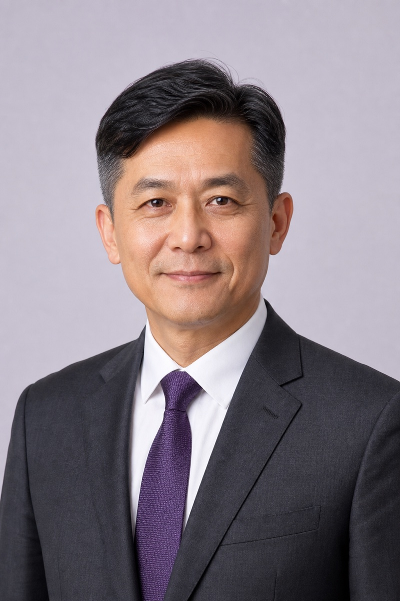
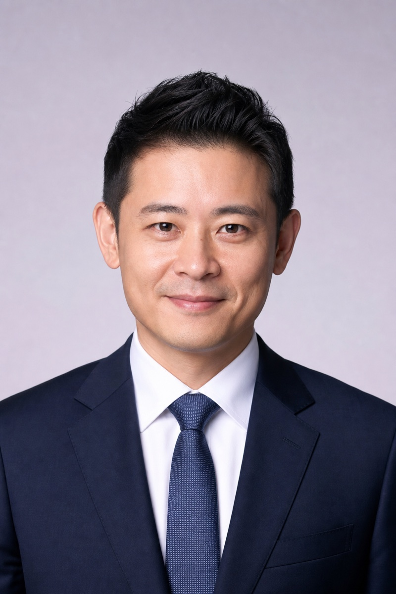
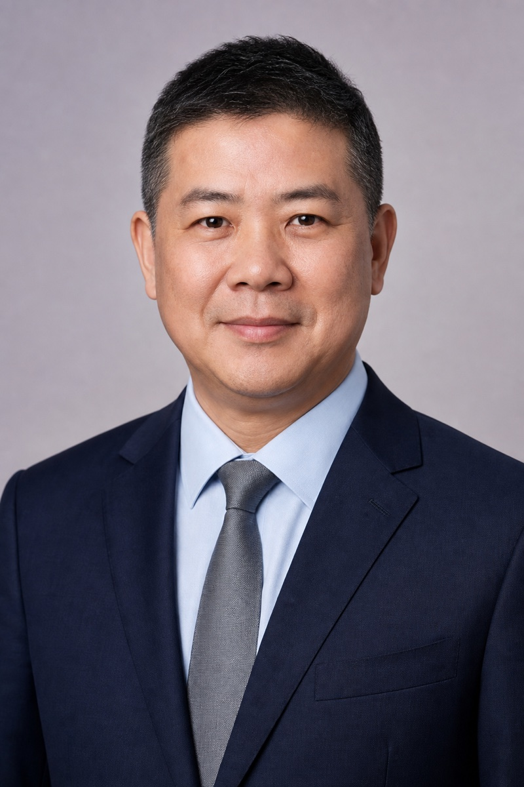

01
About Us
Advanced Medical Material Corp. (AMM Corp.) was established in 2016 with a clear mission: to bring high-quality, competitively priced medical devices to Taiwan and give patients real choice in their treatment options.
Background
Before founding AMM Corp., I spent more than a decade as Sales Director at a medical device company in Taiwan. During that time, I became deeply familiar with Taiwan's medical device certification processes, import regulations, distribution channels, and evolving market needs. I also saw a structural gap in the market: only a limited number of brands were available, and patients often had very few alternatives in terms of technology, quality, and cost.
This realization was the starting point for AMM Corp. In 2016, I decided to build a company dedicated to importing and promoting medical devices that combine strong clinical performance with sustainable pricing, so that both hospitals and patients in Taiwan can benefit from more balanced choices.
Our Journey
Over the past decade, our journey has not always been easy.
We have faced significant tests and challenges, including difficult market conditions, regulatory changes, and business decisions that did not always work as planned. At certain moments, the company even had to confront serious questions about its own continuity.
At the same time, we have experienced periods of stability and growth, and have achieved several remarkable milestones in Taiwan's medical device field. These highs and lows have given us a rich collection of real-world cases and learning experiences—each with strong educational value for our team and partners.
These experiences shaped AMM Corp. into what it is today: a company that understands risk, values long-term commitment, and is willing to invest the time and effort needed to build sustainable brands in the Taiwanese market.
Our Team
One important lesson from our history is that company growth never comes from one person alone.
Today's AMM Corp. is the result of a team that shares the same belief: that patients deserve better access to high-quality medical technology, and that hospitals and clinicians deserve a professional, trustworthy local partner.
Our colleagues have stood together through both difficult periods and successful ones, contributing their expertise in regulatory affairs, market development, clinical support, and daily operations. This collective effort is the foundation of our current scale and reputation.
For international manufacturers, our founding story explains how we look at partnerships:
Journey & Milestones
Core Value and Vision
As a trusted Taiwan partner for foreign medical device companies, we focus on ethical execution, strong market insight, and long-term relationships with key customers. Together with our partners, we create market value and synergies through close collaboration, open communication, transparency, and mutual respect.
Our goal is to introduce products that enhance quality of care and meet unmet clinical and public health needs in Taiwan, with a particular focus on self-pay items. Inside the company, we uphold and reward high performance and the highest standards of ethical business conduct.
Organization



License
Taiwan's Good Distribution Practice (GDP) for medical devices is a TFDA regulatory framework to ensure that devices remain safe, effective, and of consistent quality throughout importation, storage, transportation and distribution. Importers and distributors of designated high-risk devices must establish a documented GDP quality system, pass TFDA inspection, and obtain a distribution license before engaging in wholesale, import, or export activities.
Our company has obtained Taiwan GDP certification (License No.: GDP0253), demonstrating full compliance with TFDA Good Distribution Practice requirements for medical devices.
About AMM